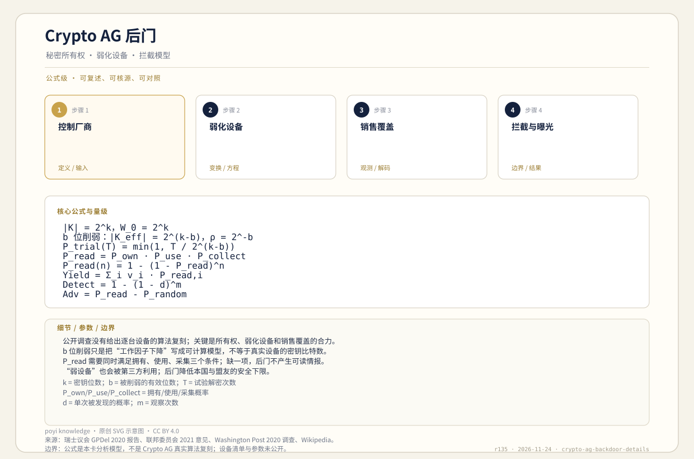
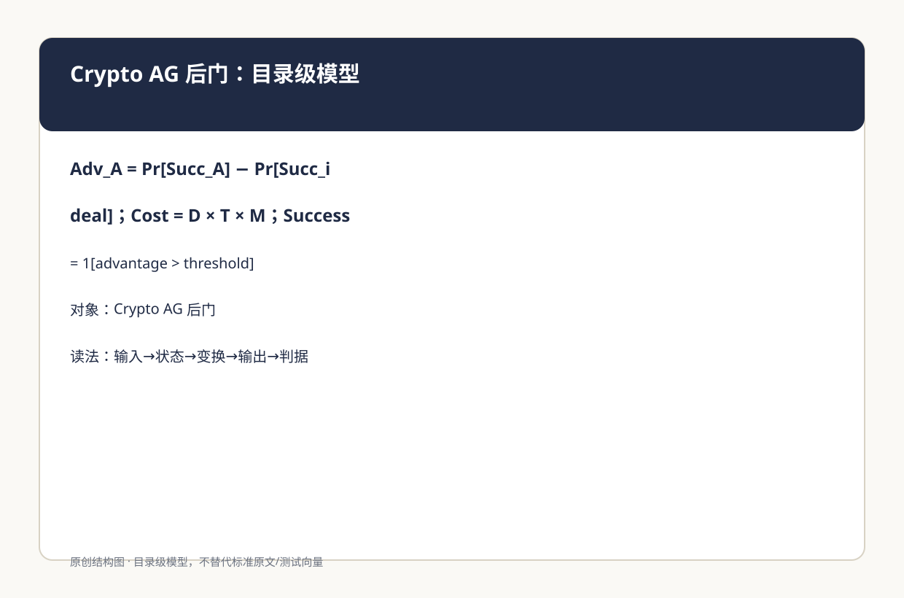

原理与机制
攻击：Crypto AG 后门（Crypto AG Backdoor）。Crypto AG 后门不是“某台机器里有一个秘密公式”，而是供应链控制：秘密拥有厂商、向客户销售“强/弱”两类设备、让弱设备的加密可以被现实工作量破解，再通过通信拦截把解密结果变成情报。把公开记录能支持的部分写成条件模型：P_read=P_own·P_use·P_collect。P_own 是目标使用的设备来自被控厂商的概率，P_use 是目标实际使用该设备的概率，P_collect 是相关通信可被采集的概率。三者缺一，后门不产生可读情报。工作因子侧可写：原始密钥空间 |K|=2^k，若设备被削弱 b 位，则 |K_eff|=2^(k-b)，相对工作因子 ρ=2^-b；给定 T 次试验解密，单次成功率 P_trial(T)=min(1,T/2^(k-b))。这只是把“变弱”折算成可计算量的分析模型，不是 Crypto AG 的真实算法复刻。

为什么重要
公开调查显示，这种控制的价值在于规模：一台设备卖到多国政府、军队和外交机构，同一类弱点就能被反复利用；而且客户看到的是“正常产品”，不会主动怀疑厂商。供应链后门因此比单次网络攻击更隐蔽、更持久。它同时暴露了安全边界：弱设备不只服务一国情报机构，也可能被第三方逆向或利用；出口管制、盟友关系和厂商声誉都会反噬。对采购方，信任链必须延伸到厂商所有权、代码/硬件来源和独立检测。
应用与实例
历史步骤：1952 年 Boris Hagelin 在瑞士创立 Crypto AG；1970 年 CIA 与西德 BND 秘密共同收购，行动代号 Thesaurus/Rubicon；向多国销售加密设备；对部分设备削弱算法；1993 年德方退出，CIA 继续控制；2018 年公司清算；2020 年联合调查公开。防御侧：对高价值通信不要依赖单一厂商的封闭算法；要求公开算法、独立审计、密钥托管透明和供应链溯源；对“异常便宜、异常好卖”的设备保持警惕。

边界与攻击面
失效与边界：公开记录没有逐台设备的算法、密钥长度和客户清单，不能把任何具体设备都断言为已破解；P_read 是分析模型，不是历史统计；弱设备也会伤害盟友和本国私企；出口管制与政治反噬会削弱行动的长期收益。伦理与法律：这是情报行动史，不是可复制的攻击教程；不能据此推导现代设备的实现细节。对历史事件的兴趣应落在供应链治理、采购审计和加密透明度上。
历史与背景
Crypto AG 于 1952 年由 Boris Hagelin 在瑞士 Steinhausen 创立；1970 年被 CIA 与西德 BND 秘密收购，德方约 1993 年退出，CIA 作为唯一所有者持续到约 2018 年，公司随后清算。2020 年 2 月 Washington Post、ZDF 和 SRF 联合调查公开此事；瑞士议会 GPDel 于 2020 年 11 月发布报告，联邦委员会 2021 年 5 月作出回应。事件成为供应链信任与出口管制的经典案例。
技术参数与复算边界
该条目的形式模型是 (\mathrm{Adv}^{\mathrm{attack}}_A(\lambda)=\Pr[\mathrm{Game}_A(\lambda)=1]-\frac12)。输入：输入：Crypto AG 后门的公开参数、密钥/随机数与消息；变量说明：λ 安全参数；Game 把攻击目标写成挑战-响应游戏。 预期输出：按 Crypto AG 后门 的规范执行后得到可验证的输出或可比较的优势界。 复算必须给出输入、步骤、输出和单位；示例只演示流程，不替代标准测试向量。
复杂度由密钥长度、分组/状态规模、轮数、随机数质量和敌手模型共同决定；参数越界、版本差异与实现侧信道都可能使公式结论失效。已登记限制：该条目只给出形式模型与可复算步骤，不声称已完成生产实现、侧信道认证或第三方安全评估。
参数与状态规模
公式 (\mathrm{Adv}^{\mathrm{attack}}_A(\lambda)=\Pr[\mathrm{Game}_A(\lambda)=1]-\frac12) 的输入、输出和单位必须逐项登记；复算顺序为：1. 定义挑战与获胜条件 2. 给攻击者 oracle 访问 3. 计算优势并与目标界比较。
状态规模、密钥长度、分组长度和轮数决定复杂度；这些量不能从标题推断，必须以标准或实现文档为准。
逐步示例与核验
形式模型与复算步骤
[\mathrm{Adv}^{\mathrm{attack}}_A(\lambda)=\Pr[\mathrm{Game}_A(\lambda)=1]-\frac12]
Crypto AG 后门的公开参数、密钥/随机数与消息；变量说明：λ 安全参数；Game 把攻击目标写成挑战-响应游戏。1.定义挑战与获胜条件。2.给攻击者 oracle 访问。3.计算优势并与目标界比较。边界：公式只覆盖已登记的参数与假设；参数取值、标准版本和实现细节仍以来源为准。
参考出处
- Wikipedia search entry for Crypto AG 后门. https://zh.wikipedia.org/w/index.php?search=Crypto%20AG%20%E5%90%8E%E9%97%A8
- Handbook of Applied Cryptography (Menezes, van Oorschot, Vanstone). https://www.cacr.math.uwaterloo.ca/hac/